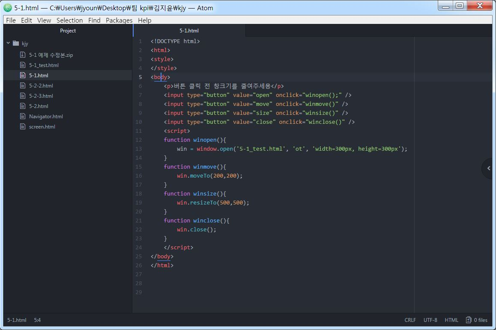

사용자의 웹 브라우저에 의해 요청된 자료를 클라이언트에게 제공하기 위해서는 인터넷 상의 웹 서버는 필수적이다.
IIS: 마이크로 소프트 윈도우 기반의 웹 서버로서 ASP 언어를 사용한다.
아파치(Apache): 플래폼의 구애를 받지 않지만, 주로 리눅스 기반에서 PHP 언어를 사용한다.
톰캣(Tomcat): 서버 기능이 포함된 JSP 컨테이너다.
서버에서 보내온 HTML 파일은 단순한 텍스트 형태의 소스 파일이다. 이것을 예쁜 그림과 사운드 등의 멀티미디어 요소를 조합하여 보기 좋게 보여주거나, 페이지 간의 링크가 기능을 발휘하기 위해서는 HTML 해석기가 필요하다. 이런 역할을 하는 것이 웹 브라우저다.
대표적인 브라우저는 인터넷 익스플로러(IE, Internet Explorer), 사파리(Safari), 파이어폭스(Firefox), 크롬(Chrome) 등이다. 이 브라우저들은 네이버나 구글과 같은 포털 사이트에서 검색으로 쉽게 구해 본인의 PC에 설치할 수 있다.
웹 사이트가 구동되기 위해선 수많은 기술이 복합적으로 엮여서 돌아가야한다. 그중 대표적인 몇가지 프로토콜은 다음과 같다.
HTML 프로토콜: HTML 파일을 전송하기 위한 하이퍼텍스트 전송규약. 주로 사파리, 크롬, 파이어폭스, 인터넷 익스플로러 등의 브라우저를 이용한다
FTP 프로토콜: 대량의 파일을 수신하기 위한 파일 전송규약. 주로 알FTP, CuteFTP, FileZila 등의 유틸리티를 이용한다.
TELNET 프로토콜: 원격지의 서버 컴퓨터를 원격제어 하기 위한 규약. 보안상 Telnet보다 SSH를 사용한다. 리눅스 기반 접속 툴로는 Putty, Z-term 등을 이용한다.
서버는 해당 프로토콜의 신호가 지정된 포트로 들어오게 되면 비로소 반응하도록 만들어진 프로그램이다. 서버의 이면에는 데이터베이스 등 여러 복잡한 기술들이 복합적으로 구성되어 있다. 클라이언트가 요청한 정보를 서버가 만들어서 HTML 파일 형태로 클라이언트에게 보낸다. 클라이언트 측에서는 서버에서 보낸 자료를 임시 저장소에 모아서 취합한다. 이런식으로 모아진 자료를 브라우저는 다시 읽어들여서 사용자에게 결과를 보여준다.
서버 측 주요 언어에는 다음과 같은 것들이 있다.
JSP: 운영체제의 구애를 받지 않으며 실행된다. 톰캣(Tomcat) 컨테이너 위에서 자바 기반의 언어를 사용하고, 서버에서는 Oracle 또는 MySQL 등의 DBMS와 주로 연동된다.
ASP: 윈도우 기반의 IIS 서버에서만 동작한다. MS-SQL DBMS와 연동된다. 최근 들어 ASP.Net 또는 C#.Net 형태로 발전되었다.
PHP: 리눅스 기반에 아파치(Apache) 서버에서 동작한다. 기존에 제로보드나 그누보드와 같은 사이트 빌더에서 기본적으로 사용되는 언어다. 최근에는 워드프레스 등 PHP 기반의 사이드 빌더들이 제작자에게 인기를 얻고 있다.
node.js: 흔히 "노드제이에스" 또는 "노드"라고 하는 자바스크립트 라이브러리로서, 소켓을 이용하여 쉽게 실시간 서버를 구축 가능하도록 한다. 이 기술은 아직 잘 알려지지 않아서 기존 개발자들 중에도 좀 생소하게 생각하는 경우가 많지만, 앞으로 IT 플랫폼 동향이 PC에서 모바일로 옮겨갈 것을 감안하면 좀 더 가볍고 빠른 Node.js는 매우 중요한 자바스크립트 및 서버 기술이 될 것이다. Node.js를 이용하면 실시간 채팅 기능, 실시간 구매 기능, 실시간 결과 조회 기능 등을 아주 쉽게 구현 가능할 뿐 아니라, 웹 사이트 이벤트 등록시 사용자가 폭주했을 때 생기는 서버 다운 등의 문제를 쉽게 해결 할 수 있고, 기본 웹 서버 측 언어로 개발되었을 때보다 수십 배 이상의 성능 향상을 도모할 수 있다. Node.js는 어떠한 DBMS와 연동도 가능하지만, 주로 NoSQL 계통의 MongoDB와 잘 어울린다.
클라이언트 측 주요 언어에는 다음과 같은 것들이 있다.
HTML: 하이퍼텍스트를 구현하기 위한 뼈대가 되는 핵심적인 기술인 마크업 언어다.
자바스크립트(Javascript): 로컬의 브라우저에서 실행되는 인터프리터의 방식의 프로그래밍 언어다. 우리는 앞으로 이것에 대해서 아주 긴 얘기를 할 것이다.
CSS: HTML은 뼈대이고, 자바스크립트가 기능이라면, CSS는 꾸미기 위한 옷의 기능이라고 할 수 있다.
jQuery: 자바스크립트의 코드가 길어지면 사용하기 복잡해지는 단점을 파격적으로 개선한, 존 레식(John Resig)이 창안한 자바스크립트 기반의 라이브러리 중 하나다. 하지만 이 jQuery를 좀 더 깊이 이해하고 잘 쓰기 위해선 자바스크립트의 이해가 필수적으로 우선되어야 한다는 것은 너무나 당연하다.
회원정보, 게시판, 상품정보와 같은 동적인 정보를 저장하기 위해서는 데이터베이스와 DBMS가 필수적이다. 이들 DBMS는 모두 ANSI 표준을 따르고 있는 SQL 언어를 사용한다.
Oracle: 오라클에서 라이선스를 가지고 있다. JSP와 함께 가장 많이 쓰인다.
MySQL: 원래는 무료 오픈 소스였으나 현재는 오라클에 라이선스가 있다.
몽고DB: 클라우드, 하둡 등과 같은 빅데이터 처리에 유리하다.
<유료> = 라이센스 필요
어도비 드림위버
-프로그램이 무거움
-미리보기 가능
에디트플러스
-열선택 기능 제공
울트라에디트
-파일비교기능 제공
-열선택 기능 제공
<무료>
아톰
-Github에서 만든 텍스트 에디터

브라켓
-어도비에서 제공하는 텍스트 기반 에디터
-멀티 플랫폼 지원
-실시간 미리보기 지원
-emmet기능 제공
-분할창 지원
서브라임텍스트
-파이선 기반 코드 에티터
-플러그인 확장 기능이 많음
notepad++
-스타일변경 용이
-분할창 지원
비주얼스튜디오코드
-프로그램이 가볍다.
생활코딩 (https://opentutorials.org/course/1)
CMS FACTORY (https://www.cmsfactory.net/)
codecademy (https://www.codecademy.com/)